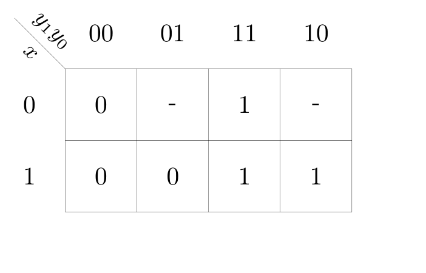
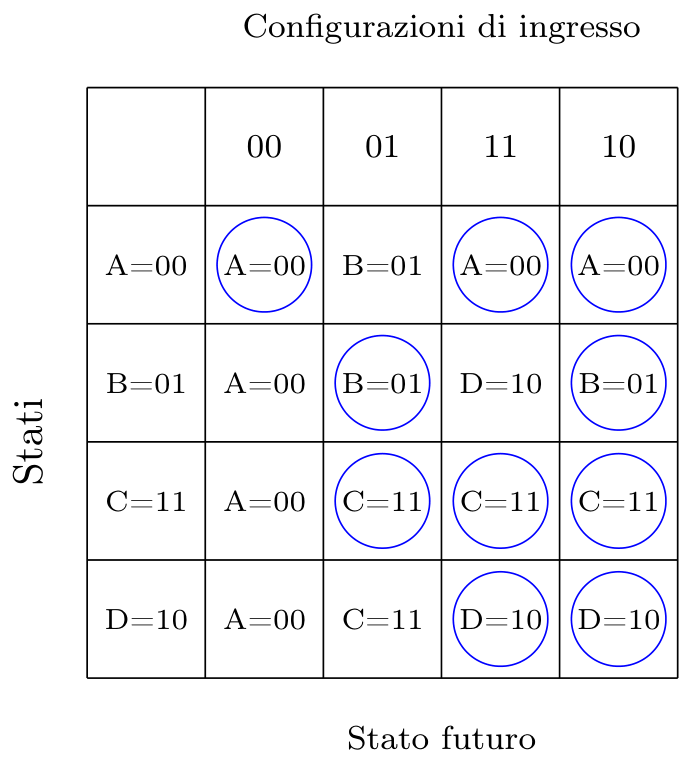
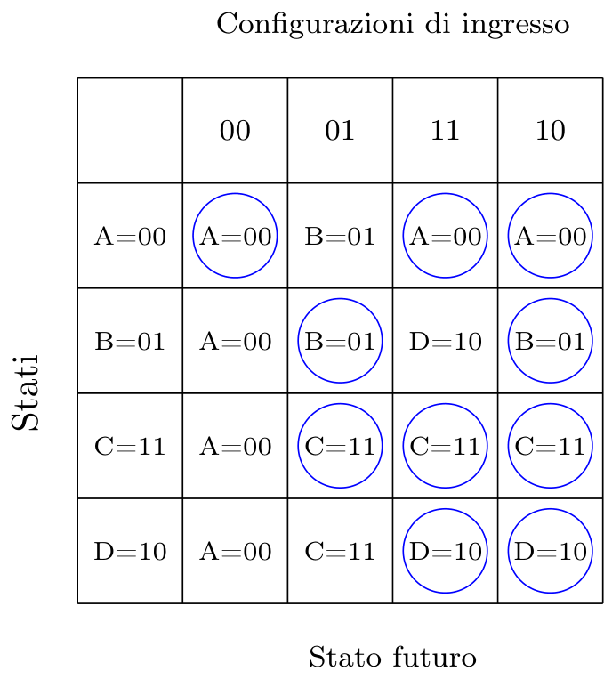
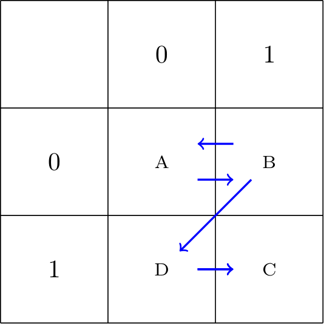
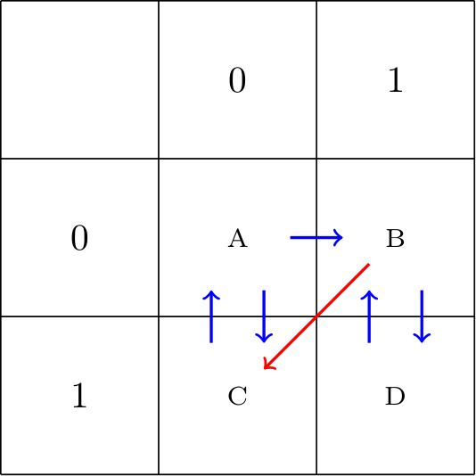

Definizione - Funzionamento generale di una RSA
Le reti sequenziali asincrone funzionano "ad inseguimento degli ingressi" (esattamente come le reti combinatorie ), si ha infatti che l'uscita e lo stato interno si modificano solo quando cambiano i segnali di ingresso (e non dipendono dalla durata degli ingressi). Per questo motivo esse sono soggette ad alee statiche e dinamiche.
Affinchè una RSA funzioni correttamente nel passaggio da una condizione di stabilità all'altra (ovvero nel "funzionamento in modo fondamentale"), è necessario rispettare una serie di condizioni.
Affinchè una RSA funzioni correttamente nel passaggio da una condizione di stabilità all'altra (ovvero nel "funzionamento in modo fondamentale"), è necessario rispettare una serie di condizioni.
Definizione - Vincolo di funzionamento di una RSA - Durata degli ingressi
Come nelle reti combinatorie, anche nelle RSA esiste un limite alla velocità di funzionamento di una RSA.
Considerando un tempo \( T_{G}\) di ritardo (calcolato come il ritardo massimo dei singoli bit in retroazione), si ha che ogni configurazione deve permanere almeno per \[ (1 + t) \cdot T_{G} \] dove \( t\) è il numero massimo di transizioni multiple necessarie per raggiungere uno stato stabile.
Nel caso quindi che non si abbiano transizioni multiple, si ha un caso base di \( 2 \cdot T_{G}\) (con \( t = 1\)).
Considerando un tempo \( T_{G}\) di ritardo (calcolato come il ritardo massimo dei singoli bit in retroazione), si ha che ogni configurazione deve permanere almeno per \[ (1 + t) \cdot T_{G} \] dove \( t\) è il numero massimo di transizioni multiple necessarie per raggiungere uno stato stabile.
Nel caso quindi che non si abbiano transizioni multiple, si ha un caso base di \( 2 \cdot T_{G}\) (con \( t = 1\)).
Definizione - Vincolo di funzionamento di una RSA - Codifica degli ingressi
Dato che le RSA funzionano ad inseguimento degli ingressi, si pongono i problemi legati alle alee statiche.
Condizione necessaria per evitare alee statiche è non variare più di un bit alla volta da una configurazione di ingressi ad un'altra.
Per questo motivo, si decide di "vietare" tutte le configurazioni di ingresso che differiscono di più di un bit dalla condizione di stabilità.
Prendiamo per esempio il seguente grafo degli stati: Considerando i vincoli sulle configurazioni degli ingressi, si ottiene il seguente grafo ovvero si sono eliminate tutte le configurazioni che differiscono di più di un bit dalla "configurazione di stabilità".
Considerando i vincoli sulle configurazioni degli ingressi, si ottiene il seguente grafo ovvero si sono eliminate tutte le configurazioni che differiscono di più di un bit dalla "configurazione di stabilità".
Condizione necessaria per evitare alee statiche è non variare più di un bit alla volta da una configurazione di ingressi ad un'altra.
Per questo motivo, si decide di "vietare" tutte le configurazioni di ingresso che differiscono di più di un bit dalla condizione di stabilità.
Prendiamo per esempio il seguente grafo degli stati:

Definizione - Vincolo di funzionamento di una RSA - Evitare le alee statiche negli anelli di retroazione
Mentre per le reti combinatorie le alee statiche non risultano essere molto dannose, per le RSA sono invece un punto critico per le RSA in quanto potrebbero portare a stati che "rompono" il "giusto flusso".
Si ha quindi che, oltre a rispettare il vincolo di variare un bit alla volta nelle configurazioni di ingresso, è necessario effettuare la sintesi delle reti che calcolano lo stato futuro raggruppando tutte le celle adiacenti (con lo stesso valore) in almeno un raggruppamento (sempre di dimensione massima).
Si ha quindi che, oltre a rispettare il vincolo di variare un bit alla volta nelle configurazioni di ingresso, è necessario effettuare la sintesi delle reti che calcolano lo stato futuro raggruppando tutte le celle adiacenti (con lo stesso valore) in almeno un raggruppamento (sempre di dimensione massima).
Definizione - Vincolo di funzionamento di una RSA - Codifica degli stati
Dato che i bit di stato presente risultano essere a tutti gli effetti degli ingressi per la rete, è necessario adottare vincoli simili a quelli adottati per le configurazioni di ingresso.
Sarebbe necessario infatti che le configurazioni binarie associate ad ogni coppia (stato presente, stato futuro) devono essere adiacenti (ovvero devono variare di massimo un bit). Non è tuttavia sempre necessario adottare tale accorgimento (anche perchè sarebbe eccessivamente esoso in termini di bit utilizzati) ma solo per evitare le cosiddette "corse critiche".
Sarebbe necessario infatti che le configurazioni binarie associate ad ogni coppia (stato presente, stato futuro) devono essere adiacenti (ovvero devono variare di massimo un bit). Non è tuttavia sempre necessario adottare tale accorgimento (anche perchè sarebbe eccessivamente esoso in termini di bit utilizzati) ma solo per evitare le cosiddette "corse critiche".
Definizione - Grafo delle adiacenze
Il grafo delle adiacenze è un formalismo grafico utile per codificare correttamente gli stati di una rete. Esso non è altro che una griglia con ai margini il codice di Gray (utile per evitare transizioni da uno stato all'altro in cui variano più di un bit) dove:
Ad esempio, un grafo che codifica \( 3\) bit di stato potrà essere così composto:
- ogni cella identificata da un codice è uno stato;
- da un nodo all'altro sono presenti degli archi orientati che indicano relazioni (stato presente, stato futuro).
Ad esempio, un grafo che codifica \( 3\) bit di stato potrà essere così composto:
Definizione - Corse critiche e non critiche
Quando si prevede che due segnali in retroazione devono modificarsi contemporaneamente (ovvero le due configurazioni non sono adiacenti) si dice che sono in "corsa".
Una corsa si definisce critica se è possibile raggiungere stati di stabilità diverse (in base a quale bit cambia per primo). Se ciò non avviene e la rete attraversa transizioni multiple fino a raggiungere la giusta stabilità, la corsa si definisce non critica.
Una corsa non critica non risulta essere un problema se: Si hanno corse critiche solo nei casi in cui una colonna della tabella di flusso contengano più di uno stato stabile (con un solo stato stabile, infatti, si avrebbero una serie di transizioni multiple che raggiungerebbero prima o poi lo stato stabile, in quanto non cambiano gli ingressi). Si può quindi procedere nel seguente modo per progettare correttamente le reti sequenziali. Data la tabella di flusso:
Una corsa si definisce critica se è possibile raggiungere stati di stabilità diverse (in base a quale bit cambia per primo). Se ciò non avviene e la rete attraversa transizioni multiple fino a raggiungere la giusta stabilità, la corsa si definisce non critica.
Una corsa non critica non risulta essere un problema se:
- durante la transizione l'uscita non varia;
- gli ingressi rimangono invariati fino al raggiungimento della stabilità.
Osservazioni personali - Ad esempio
Consideriamo ad esempio la seguente tabella delle transizioni in cui non si considera (per semplicità) l'uscita  Ipotizziamo di trovarci nello stato \( B=01\) con la configurazione di ingressi \( 01\). Nel caso fosse inserita la configurazione \( 11\) si avrebbe come stato futuro previsto \( D=10\) in cui variano entrambi i bit. Dato che si è detto che è impossibile che due bit cambino contemporaneamente, si potrebbero generare le seguenti situazioni:
Ipotizziamo di trovarci nello stato \( B=01\) con la configurazione di ingressi \( 01\). Nel caso fosse inserita la configurazione \( 11\) si avrebbe come stato futuro previsto \( D=10\) in cui variano entrambi i bit. Dato che si è detto che è impossibile che due bit cambino contemporaneamente, si potrebbero generare le seguenti situazioni:
Ipotizzando invece di trovarci nello stato \( C=11\) con la configurazione di ingressi \( 01\). Nel caso fosse inserita la configurazione \( 00\) si avrebbe come stato futuro previsto \( A=00\) in cui variano entrambi i bit. Dato che si è detto che è impossibile che due bit cambino contemporaneamente, si potrebbero generare le seguenti situazioni:
- varia prima il primo bit, ovvero si avrebbe come stato futuro lo stato \( C=11\) che prevede, con la configurazione di ingresso \( 11\) una stabilità nello stato \( C=11\);
- varia prima il secondo bit, ovvero si avrebbe come stato futuro lo stato \( A=00\) che prevede, con la configurazione di ingresso \( 11\) una stabilità nello stato \( A=00\).
Ipotizzando invece di trovarci nello stato \( C=11\) con la configurazione di ingressi \( 01\). Nel caso fosse inserita la configurazione \( 00\) si avrebbe come stato futuro previsto \( A=00\) in cui variano entrambi i bit. Dato che si è detto che è impossibile che due bit cambino contemporaneamente, si potrebbero generare le seguenti situazioni:
- varia prima il primo bit, ovvero si avrebbe come stato futuro lo stato \( B=01\) che prevede, con la configurazione di ingresso \( 00\) una transizione verso lo stato \( A=00\) (ovvero lo stato previsto);
- varia prima il secondo bit, ovvero si avrebbe come stato futuro lo stato \( D=10\) che prevede, con la configurazione di ingresso \( 00\) una transizione verso lo stato \( A=00\) (ovvero lo stato previsto).
- nelle colonne che presentano una sola stabilità e presentano delle indifferenze, si sostituiscono tutte le indifferenze con lo stato stabile per quella colonna. Ipotizzando quindi di avere la seguente tabella si sostituiscono le indifferenze con lo stato stabile per la colonna, ovvero
 
 - per le colonne che presentano più di una stabilità si traccia un grafo delle adiacenze composto da \( 2^{n}\) celle, dove \( n\) è il numero minimo di bit per rappresentare gli stati, nel caso della precedente tabelle transizioni si avrebbe il seguente grafo

- nel caso esistano relazioni tra celle non adiacenti, è possibile spostare le celle fino a raggiungere un grafo corretto

- nel caso esistano "celle vuote" nel grafo delle adiacenze, è possibile sfruttarle per realizzare transizioni multiple;
- si verifica che le corse presenti siano "critiche", nel caso non lo siano la codifica è corretta, altrimenti si cerca di modificare la tabella di flusso sfruttando la stessa colonna del "collegamento" che crea problemi: nel caso nella stessa colonna esiste uno stato che porta allo stato futuro desiderato (con gli stessi ingressi dato che ci stiamo concentrando nella stessa colonna) si cerca di passare per questo stato. Ad esempio, ipotizzando di avere la seguente tabella di flusso: che equivale al seguente grafosi ha che nella colonna della cella che indica la transizione critica, ovverovi è anche lo stato \( A\) (che è adiacente allo stato \( B\)) che con la configurazione \( 11\) si "dirige" verso lo stato \( C\). È quindi possibile modificare la tabella di flusso ed il grafo delle adiacenze nel seguente modo:che equivale a

- nel caso il grafo non sia ancora corretto, si aggiunge un bit per codificare lo stato.